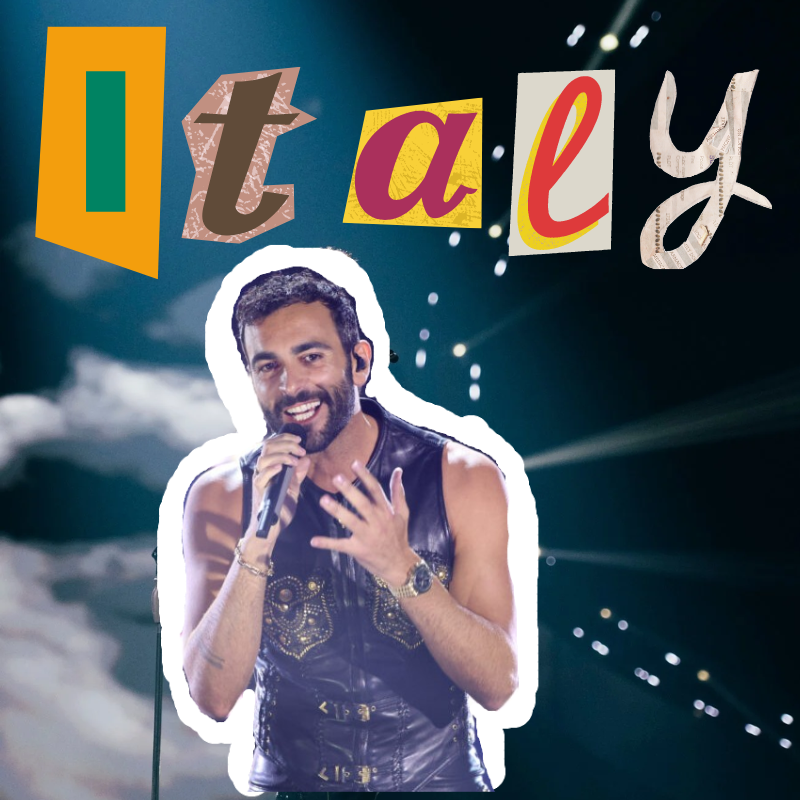
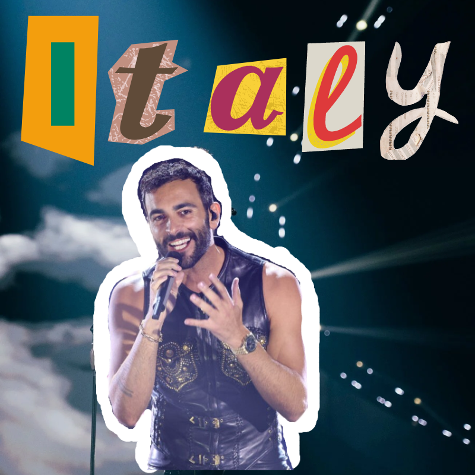

Norway

NorwayEurovision is a song contest that was started in 1956 and has been held annually ever since. Each country that is involved sends a representative to perform. This representative is usually selected during a countrys National Finals, where a jury and the audience of the specific country vote for their favourite song and performance. The winner of the previous year is usually the country that hosts the show, but because of the ongoing war in Ukraine, the county whos representatives won Eurovision 2022, they chose Liverpool as the host city instead this year. This year had a total of 37 countries participating, which is less than usual due to the high costs of sending a representative and concerns with global warming and carbon emissions involved with sending a performer. This show is a celebration of European culture, music, and pride where the performances are nothing short of incredible.
Firstly, there is the jury system. Each country involved in Eurovision has a small jury of usually a few people that decide where they would like to allocate their countrys points. A country can give at most 12 points, followed by 10, and then 8 all the way to 1. Secondly, there is the televote. This is where citizens can vote for their favourite songs, with a maximum of 20 votes per phone number. This year, they added a new Rest of the World voting system. This allows anyone who lives outside of Europe to vote as well, with their total votes having the same weight as one European country. This is to expand the international possibilities of the show, with the televote also following the same 12, 10, 8-1, points system as the jury.